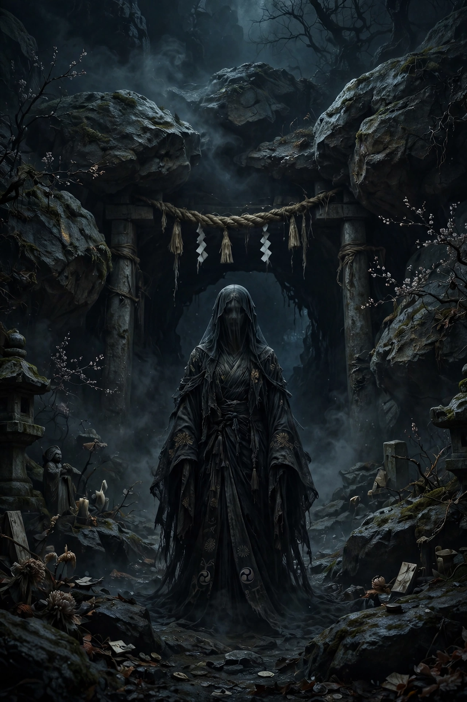

From Wikipedia, the free encyclopedia
| Izanami-no-Mikoto | |
|---|---|
| Affiliation | Shinto; creator goddess, later goddess of death |
| Spouse | Izanagi |
| Children | The islands and kami of Japan; Kagutsuchi (the fire god) |
| Realm | Yomi (the land of the dead) |

Izanami (Japanese: 伊邪那美, Izanami-no-Mikoto) is the creator goddess of Shinto mythology who, with her brother-husband Izanagi, made the islands of Japan and bore the kami. Her death in childbirth and Izanagi's disastrous visit to her in Yomi, the land of the dead, turned her into Japan's first goddess of death — the counterpart and counterweight to the gods of creation — in the myths preserved by the Kojiki and Nihon Shoki.
With Izanagi, Izanami stood on the Floating Bridge of Heaven and stirred the sea with the jewelled spear, forming Onogoro island. Their first marriage rite produced a deformed child because, the myth says, Izanami spoke first; performing the rite again with Izanagi greeting first, they bore the Great Eight Islands of Japan and a host of kami — of sea, wind, mountains, rivers, trees and food. Her last labour was the fire god Kagutsuchi, whose birth burned her fatally; from her dying body and fluids, in the Kojiki's telling, further kami arose even as she sickened and died, and the grieving Izanagi slew the fire god with his sword.
Izanagi followed her shade to Yomi and begged her to return and finish the work of creation. She answered that she had eaten the food of the underworld but would plead with its gods — provided he did not look at her. Waiting too long, he lit a flame from the teeth of his comb and saw her: a rotting corpse, maggot-ridden, her body generating the eight thunder gods. Shamed and enraged, she pursued him with the hags of Yomi and its armies. He escaped, sealed the pass of Yomotsu Hirasaka with a boulder, and across it the two exchanged their parting curse and counter-vow: she would strangle a thousand of the living each day, and he would build fifteen hundred birth-huts — death and life fixed in balance. The Kojiki names her for this Yomi-no-kuni's great goddess, and her shrine traditions centre on the Izumo region.
Izanami embodies the myth's central linkage of creation and death: the mother of the land becomes the queen of its dead. Scholars have compared the descent episode with Orpheus and Eurydice and with Persephone, while Japanese commentary has dwelt on its themes of pollution (kegare) and purification, and on the couple's boulder-divided estrangement as an image of the boundary between the worlds.
Shinto · Izanagi · Susanoo · Amaterasu · Japanese mythology · Kami